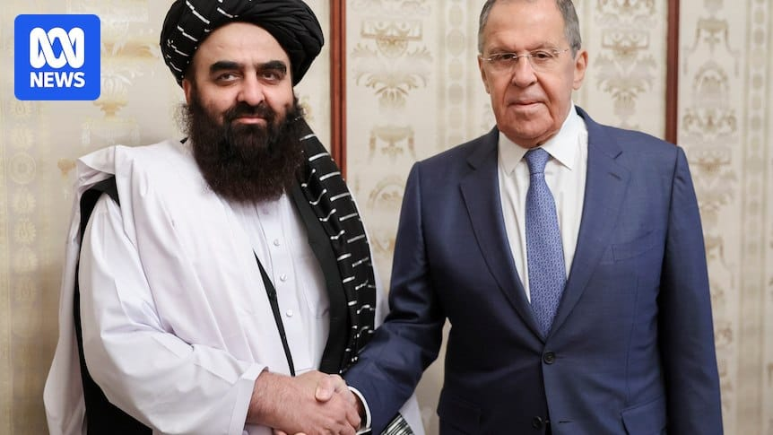

世界苦茶07月05日新闻 | 39条 | 特朗普开始发出对等关税信函

特朗普开始发出对等关税信函 | 中国手机出货量五月大跌 | 美拟限制马来泰国晶片出口 | 哈马斯以色列可能下周开始停火 | 科学家警告气候问题
今日三条新闻分析
苦茶数据
美元兑人民币：7.16（昨日7.16，前日7.16）
美元兑日元：144.51（昨日144.71，前日143.87）
上证指数：休市（昨日3472，前日3458）
标普500指数：休市（昨日6279，前日6227）
比特币：108241（昨日109383，前日109285）
布伦特原油：68.30（昨日68.60，前日67.15）
中国新闻
• 三养食品中国建厂 ：韩国知名食品企业三养食品在中国浙江省嘉兴市开设首家海外工厂。综合韩联社和《亚洲日报》报道，韩国三养食品星期四在浙江省嘉兴市马家浜路举行三养食品嘉兴工厂奠基仪式。三养食品代表理事金东灿、三养方圆集团代表张锡勋、韩国驻上海总领事金英俊，以及公司职员等约百人出席。据报道，三养食品嘉兴厂总投资达2014亿韩元，占地5.5万平方米，规划建设以生产多种口味火鸡面为主的六条产线。
• 马英九批绿营污名海峡论坛 ：上月赴中国大陆出席海峡论坛的台湾前总统马英九说，很遗憾看到民进党以“统战”之名抹红这一已延续多年的两岸交流活动。他认为“两岸都是中国人”，即便一时的政治势力想要“去中国化”，终归是荒谬可笑、徒劳无功。马英九6月14日至27日率团访问中国大陆，期间于6月15日出席在福建厦门举办的第17届海峡论坛。马英九星期五在脸书发文说，这是他两年来第四次带台湾青年访问大陆。马英九说，他很遗憾看到民进党以“统战”之名，抹红海峡论坛这个行之有年的两岸交流平台，以阻止台湾渴望两岸交流的人参加。“但事实证明，现场气氛热络，两岸各领域人士自然互动交流，没有因为政治打压而退缩，因为两岸都是中国人，同胞相见，自然格外亲切。”
• 崔天凯强调统一无商量 ：中国前驻美大使崔天凯在一场论坛上说，台湾问题关乎中国主权和领土的完整，没有谈判和妥协的余地，“中国就是要统一，没有什么好商量的”。综合中国青年报客户端和中新社等报道，崔天凯星期四在北京出席第十三届世界和平论坛、谈到台湾问题时，作出以上表述。崔天凯指出，中方一直强调台湾问题是中美关系中最重要、最敏感的问题，至今依然如此。如果美国能坚持一个中国原则，问题很容易得到解决。
• 习近平慰问游本昌 ：中共中央总书记、中国国家主席、中央军委主席习近平委托中央组织部负责人向“济公”扮演者、中国国家话剧院一级演员游本昌转达勉励和问候。据新华社客户端星期五报道，习近平表示，他为得知游本昌在92岁高龄加入中国共产党感到高兴。习近平说：“你有一颗炙热的向党之心，令人感动。希望你发挥党员先锋模范作用，带动更多文艺工作者为推动社会主义文化大发展大繁荣、建设文化强国贡献力量。顺祝身体健康、生活幸福。”
• 东部高温影响制造业 ：中国东部沿海地区星期五遭遇酷热天气，人口稠密区域持续高温，长江流域的重要农业与制造业中心被烈日炙烤，引发外界对潜在经济损失的担忧。中国中央气象台预计，星期四至星期六，中东部地区有大范围持续性高温天气，部分地区最高气温37至39摄氏度，局地将超过40摄氏度。据路透社报道，引发此次高温的副热带高压系统，今年出现时间明显提前。
• 王毅同欧盟外交代表卡拉斯7月2日在布鲁塞尔举行第十三轮中欧高级别战略对话： 卡拉斯是爱沙尼亚前总理，2024年12月担任外交与安全政策高级代表。知情人士说，王毅在四小时的会谈中给她“上了几堂历史课”，讲现实主义政治，会谈氛围尊重但紧张。王毅就乌克兰问题表示：中国不愿看到俄罗斯落败，否则美国就会转移火力全力对抗中国；但中国没有在经济或军事上帮助俄罗斯，“否则这场冲突早就结束了”。
亚太印太新闻
• 日本地震谣言引恐慌 ：网络谣言称日本星期六将发生强烈地震，引发部分香港市民恐慌。但香港地质专家指出，这一说法纯属虚构，强调以现今科技，根本无法准确预测地震发生的具体日期。上述谣言源于日本漫画家龙树谅的作品《我所看见的未来》。她在书中声称，一场震央位于日本、台湾与菲律宾海域之间的大地震可能在星期六发生。受这一谣言影响，香港市民已减少赴日旅游的频率，一些香港航班已取消前往日本的部分航线。
• 台立院促吴钊燮辞职 ：台湾在野的民众党团提案指出，台湾国安会秘书长吴钊燮担任外长时的助理何仁杰涉嫌向中国大陆泄露机密，严重危及国安，因此建议立法院决议要求吴钊燮请辞下台。蓝白在人数优势下通过此案，提案迳付二读并交付协商。综合台湾《自由时报》和中时新闻网等报道，民众党团星期五在立法院提案指出，鉴于民进党政府执政下，府院党均被中国大陆间谍渗透，何仁杰因涉嫌向中国大陆泄露机密被羁押，对国安与外交造成重大打击，严重伤害台湾利益。提案指出，吴钊燮至今未公开说明相关争议，并屡次拒绝立法院司法及法制委员会邀请列席会议，已破坏宪政体制，不适任国安会议秘书长；建议立法院通过决议，要求吴钊燮请辞下台，承担政治责任。
• 朝鲜批QUAD干涉内政 ：朝鲜批评“四方安全对话”谴责朝鲜研发核武器是干涉主权国家内政的严重政治挑衅，将采取切实可行的反制措施。美国、日本、印度、澳大利亚外长本周早前在华盛顿举行会议。朝中社星期五（7月4日）报道，朝鲜外交部当天发表谈话说，“四方安全对话”应终止试图改变朝鲜当前地位的单方面强制打压活动。
• 朝鲜人越界被韩军逮捕 ：韩国军方7月3日晚在中西部战线抓住一名越界南下的朝鲜居民。联参介绍，韩军当时在军事分界线一带发现该人员越界，并对其进行追踪和监视，最终成功抓住该人员。作战组在现场确认该人员为非武装的朝鲜平民，并将其带离非军事区。有关部门将就该人员南下的具体过程和归顺意愿进行调查。联参表示，目前朝军没有异常动向，军方已向联合国军司令部通报相关情况。
科技新闻
• 美拟限制AI晶片出口东南亚 ：彭博社星期五引述知情人士的话报道，美国政府正在计划对马来西亚和泰国出口人工智能晶片例如英伟达晶片实施新的限制，原因是担心这些技术可能被转移到中国。新措施旨在限制AI晶片和技术的出口，将先进计算能力保留在美国及盟国境内，并扩大限制中国获取这些技术的努力。特朗普政府此前已宣布，计划撤销并取代前总统拜登对先进AI晶片出口实施的限制。报道称，特朗普政府计划取消之前的限制政策的同时，对马来西亚和泰国实施新的管制措施。
• 欧盟坚持执行AI法案 ：据路透社报道，欧盟本周五表示，将坚持其具有里程碑意义的人工智能立法的实施时间表，以回应一百多家科技公司为推迟欧盟人工智能规则而做出的联合行动。包括荷兰阿斯麦、Alphabet、Meta 和 Mistral AI 等巨头在内的全球科技公司一直在敦促欧盟委员会推迟实施《人工智能法案》，称这将损害欧洲在快速发展的人工智能领域的竞争机会。欧盟委员会发言人托马斯·雷尼尔表示：“ 关于《人工智能法案》的报道、信件和各种说法我都看到过。我要明确指出：这项法案没有暂停，也没有缓冲期，更没有延后执行。”
财经新闻
• 印尼拟零关税换美小麦 ：印度尼西亚首席谈判代表和小麦行业协会星期五说，印尼已提议将美国主要进口商品的关税降至“接近零”，并购买价值5亿美元的美国小麦。路透社报道，印尼首席谈判代表、首席经济部长艾尔朗加证实，印尼鹰航将购买更多波音飞机。印尼与美国价值340亿美元的贸易协议将于下周签署。艾尔朗加说，印尼政府已提议将包括农产品在内的美国主要出口商品的关税从目前的0%至5%降至接近零。
• 台积电延日本项目重美业务 ：据《华尔街日报》星期五报道，台湾台积电计划推迟在日本的晶片工厂项目，并优先考虑在美国的业务，以避免美国总统特朗普征收的关税。不过，台积电在一份声明中说，公司在美国的投资计划不会影响其他地区的现有投资计划。声明称：“台积电不对市场传言发表评论。”
• 特朗普拟征100国对等关税 ：美国财长贝森特透露，大约100个国家将被征收最低的10%对等关税，这比美国总统特朗普原先公布的123个国家少。特朗普在4月9日宣布，暂缓执行对等关税中的较高关税部分，90天暂缓期将在7月9日到期。贝森特预计，在7月9日的期限前，会有一系列贸易协议公布；他也说，关税税率可能大幅提高。贝森特星期四接受彭博电视台访问时说，特朗普将决定是否在期限后延长与贸易伙伴的谈判。“我们会按照特朗普的意愿行事，他将判断对方是否在真诚谈判。”
• 富人转投英国避美政策 ：尽管英国近期提高对富人税率，但鉴于美国总统特朗普对外国人的不利政策，部分富裕人士正逐渐对美国失去兴趣，转而将目光投向英国。花旗集团全球财富主管西格星期四接受彭博社访问时说，英国内外的富人群体正在“双向流动”：有些正离开英国，但也有部分观察到美国政策变化后，认为英国可能是他们子女未来就学和生活的更佳选择。这一趋势反映，美国总统特朗普推行“美国优先”政策，限制和打击国内顶尖高校及外国学生，引发富裕家庭对美国投资和教育环境的担忧，间接推高英国大学的申请量。
• 美贸易逆差扩大至715亿 ：美国5月份贸易逆差扩大至715亿美元，高于4月的603亿美元，超出市场预期，显示特朗普政府加征关税对经济产生冲击，扰乱了供应链。美国商务部星期四公布的贸易数据显示，自年初以来，特朗普宣布的一系列关税措施冲击了贸易，企业为规避政府对大多数贸易伙伴加征的关税提前囤货，接着暂停进货，等待高额关税下调。美国5月进口下降0.1%至3505亿美元，其中消费品进口减少40亿美元，尽管汽车及零部件进口上升，但服装和玩具类下降明显。美国出口跌幅更大，下降4.0%至2790亿美元，这主要受工业用品和原材料出口减少拖累。
• 白兰地被征最高34.9%关税 ：中国商务部宣布，原产于欧盟的白兰地存在倾销，并将从星期六起，对相关产品征收最高达34.9%的反倾销税，为期五年；但对于部分企业以不低于承诺价格出口至中国的产品，将不征收反倾销税。中国商务部星期五发布公告，对原产于欧盟的进口相关白兰地反倾销案的最终裁定。根据公告，中国商务部裁定相关白兰地存在倾销，倾销幅度为27.7%至34.9%，并将从7月5日起实施最终反倾销措施，实施期限五年。
• 特朗普宣布8月征对等关税 ：美国总统特朗普说，美国将设定单边关税税率，各国将从8月1日起缴纳对等关税。彭博社报道，特朗普星期五凌晨对媒体说，美国将在星期五发出大约“10封至12封”关税信函，更多关税信函“将在来几天发出”。他说：“我相信至7月9日，全部都已收到信，它们的关税率可能介于10%至20%，也可能介于60%至70%。”
• 特朗普支持移民劳工担保制 ：美国总统特朗普说，如果移民劳工的雇主愿意为他们作担保，他愿意让这些劳工留在美国。路透社报道，特朗普星期四（7月3日）在爱荷华州博览会场发表竞选式演说时透露，他正在与国土安全部合作，以帮助美国农场在收成季节对移民劳工的需求。特朗普在活动上说：“如果一个农民愿以某种方式为这些人作担保，我想这应该是一件好事。我们不想把农场的工人全部赶走。”
• 中方促美继续取消芯片限制 ：美国解除对华出口晶片设计软件等的限制后，中国商务部说，对话合作才是正道，讹诈胁迫没有出路，并希望美国认识中美经贸关系互利共赢的本质，继续同中国相向而行。中国商务部星期五在官网表示，中美伦敦经贸会谈后，双方于近期确认了落实两国元首6月5日通话重要共识和巩固日内瓦经贸会谈成果的具体细节。商务部提到，目前中美双方团队正在加紧落实伦敦框架有关成果。中国正依法依规审批符合条件的管制物项出口许可申请。美国也采取相应行动，取消对华采取的一系列限制性措施，有关情况已向中国作了通报。
• 手机出货量大幅下滑 ：中国信通院最新数据显示，今年五月，中国国内市场手机出货量2371.6万部，同比下降21.8%，其中，5G手机2119.0万部，同比下降17.0%，占同期手机出货量的89.3%；中国国内手机五月份上市新机型39款，同比下降23.5%，其中5G手机13款，同比下降55.2%，占同期手机上市新机型数量的 33.3%；国产品牌手机五月份出货量1917.7万部，同比下降24.2%，占同期手机出货量的80.9%；国产品牌上市新机型36款，同比下降25.0%，占同期手机上市新机型数量的92.3%。
俄乌战争
• 泽连斯基讨论空防援助 ：乌克兰总统泽连斯基说，他星期五与美国总统特朗普通话讨论了防空问题，并同意在俄罗斯袭击升级之际，致力于提升基辅“空中防御”能力。路透社报道，泽连斯基在Telegram上补充称，他与特朗普讨论了联合国防生产以及联合采购和投资事宜。乌克兰一直要求华盛顿向其出售更多爱国者导弹，认为这对于保卫其免受俄罗斯空袭至关重要。
• 荷兰证实俄使用化武 ：荷兰国防部长兼军事情报局局长布雷克尔曼告诉路透社，荷兰情报机构已收集到俄罗斯在乌克兰广泛使用禁用化学武器的证据，并呼吁对莫斯科实施更严厉的制裁。路透社报道，布雷克尔曼在采访中说：“主要结论是，我们可以确认俄罗斯正越来越多地使用化学武器。“这令人担忧，俄罗斯在战争中使用化学武器正变得更加常态化、标准化和广泛化。”
• 俄乌再度交换战俘 ：俄罗斯和乌克兰星期五宣布再次交换战俘。法新社报道，乌克兰总统泽连斯基公布了获释乌克兰士兵的照片，照片中士兵们裹着蓝黄两色的国旗。他在社交媒体上说：“我们的人民回家了。他们中的大多数人自2022年以来一直被俄罗斯囚禁。”
• 俄罗斯成为首个承认塔利班政权的国家： 自2021年塔利班重新掌权以来，俄罗斯成为第一个正式承认其在阿富汗政府地位的国家。阿富汗外交部称俄罗斯的正式承认是“历史性的一步”。尽管塔利班政权严格执行其对伊斯兰教法的解释，但它始终寻求国际承认。 （翻评：我才知道我们折腾了这么久，还没有承认塔利班政权。）
• 中方欢迎俄承认阿富汗临政权 ：对于阿富汗临时政府通报，俄罗斯成为首个承认他们的国家，中国外交部回应时称，中国支持国际社会加强对阿富汗临时政府的接触交流。中国外交部发言人毛宁星期五在例行记者会应询时说，中方对俄罗斯和阿富汗临时政府关系的新发展表示欢迎。她说，作为阿富汗的传统友好邻邦，中方始终认为，阿富汗不应当被排除在国际社会之外，中方支持国际社会加强同阿富汗临时政府的接触交流，鼓励其积极回应国际社会的关切，共同帮助阿富汗实现重建和发展，支持阿方打击暴恐势力，为地区的和平稳定与繁荣作出积极的贡献。
• 俄乌互空袭乌造成伤亡 ：乌克兰空军7月4日称，3日夜间至4日凌晨，俄军使用539架无人机和10余枚导弹对乌发动大规模空袭，空袭主要方向是基辅。袭击造成1人死亡、26人受伤。这是继6月29日俄军大规模空袭后，俄方再次升级空袭规模。俄罗斯国防部4日通报，俄军使用导弹和无人机，对乌克兰无人机研发和生产企业、军用机场和炼油厂等发动了大规模打击。 （翻评：说实话，基辅的伤亡比想象中小。）
• 俄罗斯国家石油管道公司副总裁安德烈·巴达洛夫坠楼身亡： 据报道，安德烈·巴达洛夫于今日上午从位于鲁布廖夫公路的公寓窗户坠落身亡。目前，调查人员正在现场工作。巴达洛夫自2021年起担任俄罗斯国家石油管道公司副总裁，此前曾就职于“曙光”科学研究所。
• 美国国防部暂停对乌武器援助，尽管军方评估认为不会影响美军战备： 本周，美国国防部以库存低为由，暂停了对乌克兰的武器援助。但据三位美国官员透露，高级军官的分析认为这批援助并不会危及美军自身的弹药储备。此举令国务院、国会成员、乌克兰官员和欧洲盟友感到措手不及。该决定遭到了包括共和党和民主党在内的许多支持援乌议员的批评。众议院民主党资深议员、来自华盛顿州的亚当·史密斯表示，五角大楼以军事战备为理由暂停援助，实则是在推进切断援乌计划的政治议程，这种做法“并不真诚”。
• 俄罗斯空袭敖德萨，击中中国领事馆；与此同时，基辅发现含有中国零件的无人机残骸： 7月3日，俄罗斯对乌克兰敖德萨发动导弹和无人机袭击，造成包括中国驻敖德萨总领馆在内的多栋建筑受损，乌克兰外交部长安德烈·西比哈于7月4日证实了这一消息。他在X平台表示：“在昨夜俄罗斯对乌克兰的猛烈空袭之后，我们在基辅发现了一架俄伊联合制造的‘沙赫德-136/杰兰-2’自杀式无人机的组件，该组件由中国制造，并于近期供应。”
国际新闻
• 超60位科学家发出严峻警告：地球正奔向灾难，“一切都在朝错误方向发展”： 据BBC报道，由60多位顶尖科学家组成的研究团队警告称，如果地球继续当前的污染和碳排放水平，全球平均气温在未来三年内很可能将超过工业化前水平2.7华氏度的关键门槛。这个门槛是近200个国家在《巴黎协定》中共同承诺要避免突破的限度。联合国警告称，如果气温持续超过这个数值，地球将面临严重后果。理想情况下，联合国希望全球温升不要在本世纪结束前突破这一门槛。然而，自该协议签署以来，科学家们认为全球在限制碳排放方面并无实质进展。利兹大学气候研究员皮尔斯·福斯特告诉BBC：“一切都在朝错误方向发展。我们正目睹前所未有的变化，地球正在加速变暖，海平面也在加速上升。”
• 联合国称613人争援被杀 ：联合国人权办公室称，一个月内有至少613名巴勒斯坦人在试图获取援助时被杀。发言人虽然说尚无法确定杀戮的负责人，但以色列军队很明显炮击和射击了试图到达援助物资分发点的巴勒斯坦人。联合国人权办公室称，相关数据基于其可靠来源收集。但加沙人道主义基金会对伤亡数字表示怀疑，指责联合国直接从哈马斯控制的加沙卫生部门获取伤亡数字，试图抹黑该基金会。以军表示正在调查相关死亡报告，正努力减少巴勒斯坦民众与以军之间的摩擦。两名美国承包商的雇员受访并提供材料表明，守护援助物资分发点的承包商在巴勒斯坦人寻求援助时使用实弹、震撼弹和胡椒喷雾，对无辜的人造成了不必要的严重伤害。承包商Safe Reach Solutions证实采用实弹，但表示这是在高峰期控制人群的必要措施。
• 哈马斯或下周开始停火 ：哈马斯7月4日表示，就阻止以色列对加沙的侵略，哈马斯与多个巴勒斯坦派别完成内部磋商，并向谈判斡旋方作出“积极”回应。哈马斯已“做好认真准备，以便立即开启关于停火协议框架实施机制的谈判”。一名哈马斯官员称，停火最早可能于下周开始，但首先需要谈判以确定每名获释的以色列人质可交换的巴勒斯坦囚犯人数，并需具体说明停火期间进入加沙的援助数量。哈马斯还希望通过联合国和其他人道主义机构获得更多援助。该官员还称，谈判将从停火的第一天开始，以便达成永久停火和以色列从加沙全面撤军，作为释放剩余人质的交换。他说，特朗普已经保证，如果需要，停火将延长到60天以上，以便这些谈判达成协议。美国尚未证实此类保证。
• IAEA核查人员撤离伊朗 ：国际原子能机构星期五说，已从伊朗撤出最后一批核查人员，因为围绕核查人员重返伊朗核设施的僵局进一步加剧。路透社报道，三周前，以色列首次对伊朗核设施发动军事打击。此后，国际原子能机构的核查人员一直未能对伊朗设施进行核查。IAEA在X上说：“IAEA的一个核查小组今天安全离开伊朗，返回位于维也纳的总部。在最近的军事冲突期间，他们一直待在德黑兰。”
• 特朗普拟涨外籍游客票价 ：美国总统特朗普星期四签署行政令，指示美国内政部研究提高外国游客进入美国国家公园的票价，确保美国居民在游览国家公园时具有优先权利。新华社报道，白宫发布的说明文件指出，提高外国游客门票价格是世界各地国家公园的一项普遍政策。从外国游客身上增收的费用，将为国家公园内部维护项目筹集数亿美元。白宫说，这项行政令兑现特朗普“美国优先”的承诺。
• 特朗普签3.4万亿法案 ：美国总统特朗普在美国独立日把3.4万亿美元的“大而美”税收与支出法案签署成法，标志着特朗普的重大政治胜利。综合彭博社和路透社报道，这项庞大的预算案涵盖了特朗普在2024年竞选期间提出的一系列优先事项，包括延长特朗普在首个任期颁布的减税政策、为小费收入提供临时性税收优惠以及拨款打击非法移民。星期五下午在白宫外举行的签署法案仪式，洋溢着特朗普政治集会的气氛。特朗普在签署法案前说：“这是真正的言出必行、信守承诺。”
• 捷克大停电无恐袭迹象 ：捷克部分地区星期五发生大规模停电，导致首都布拉格地铁短暂停运。当局表示，此次停电可能是技术故障造成的，没有网络攻击或恐怖袭击的迹象。路透社报道，捷克电力供应公司在一份声明中说：“部分输电系统断电；此次事件还影响了大部分输电系统变电站。”CEPS说，受影响的八个变电站中有五个已经恢复运行，停电原因正在调查中。
• 涉破坏海底电缆船长出庭 ：一名涉嫌在波罗的海破坏海底电缆的香港注册货船船长，星期五在香港出庭时获法院指派律师。案件被押后至9月，以便控方有更多时间向芬兰和爱沙尼亚当局索取证据。据路透社报道，这名被控船长名为万文国（，是集装箱船“新新北极熊号”的负责人。万文国星期五出现在香港东区裁判法院时，尚无法律代表，法院遂为他指派值班律师。